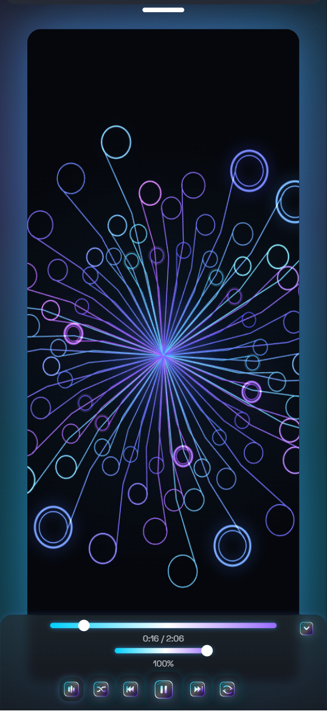
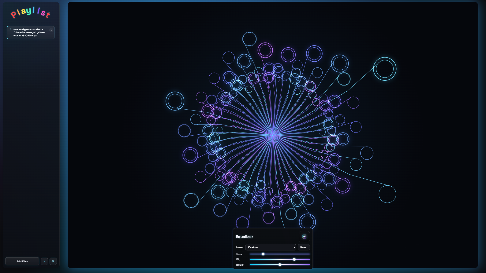

Visualizer Surface
The hero behaves like a player stage, not a generic product banner.
Concentric glow, neon bars, tighter chrome and a framed screenshot make the first fold feel connected to the actual interface.

Reactive neon audio player
EchoGlow is not a flat product page anymore. The landing now mirrors the player mood: dark scene, bloom lighting, control-surface cards and a stronger sense of motion.

Interface
The goal is simple: when someone lands here, it should feel like the app already started.
Visualizer Surface
Concentric glow, neon bars, tighter chrome and a framed screenshot make the first fold feel connected to the actual interface.

Playlist DNA
Cards use denser contrast, softer borders and the same neon edge treatment as the player shell.
Motion Mood
No flat sections. Each block keeps subtle bloom so the page feels powered, not static.
Audio-first
The emphasis is on drop, play, shape and react, matching how the player is actually used.
Mobile Match
The darker baseline now sits much closer to what users see once they enter the player on phone.
Demo
Instant session
The demo still runs fully in-browser. No backend playlist pipeline, no fake rendering, just local audio processing, canvas visuals and persistent session state.
Flow
Files and folders land directly in the playlist without sending anything away from the browser.
Shift bass, mid and treble until the playback shape matches what you want to hear.
The visualizer, chrome and bloom cues keep the experience feeling alive while playback runs.
Stack
The stack is still native to the browser. The difference is mostly visual discipline and clearer hierarchy.
Contact
Send a message directly from the landing without losing the same dark neon tone.
FAQ
Yes. The player is wired as a PWA and continues to run once the required assets are cached.
Playlist data and playback-related preferences persist locally, so sessions survive reloads.
Yes. EchoGlow is built around local audio files, drag-and-drop flows and browser-native processing.